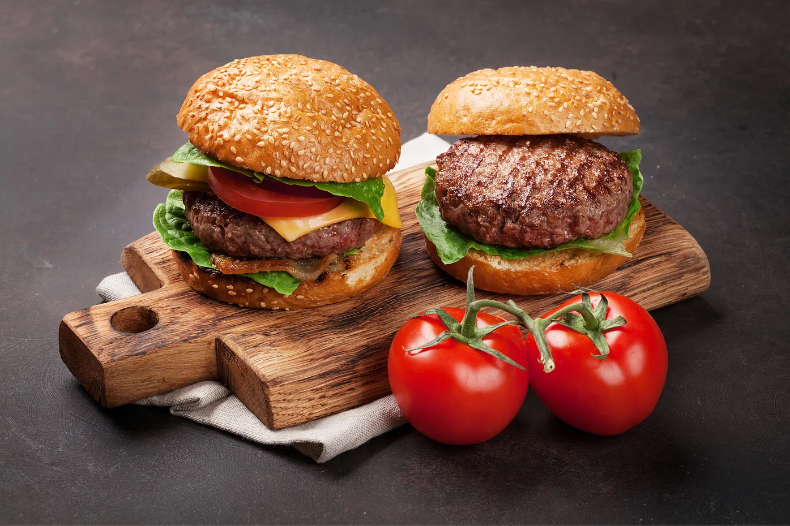

<section class="ingredients">
  <div class="ingredients-container">
    <div class="ingredients__image-container">
      
    </div>
    <div class="ingredients__content-container">
    <div class="ingredients__content">
      <h2 class="ingredients__title">Ingredients</h2>
      <h3 class="ingredients__subtitle">Meat Quality</h3>
      <p class="ingredients__paragraph-desc">
        We use the finest patties for our burgers.
      </p>
      <p class="ingredients__paragraph">
        Many will agree that the most important thing in a burger is a juicy
        patty made from good meat. At Freddy Burgers, we select meat producers
        carefully and ensure that every burger tastes perfect.
      </p>
      <ul class="ingredients__list">
        <li class="ingredients__item" style="display: flex">
          <!--тимчасово-->
          
          Humanely handled;
        </li>
        <li class="ingredients__item" style="display: flex">
          <!--тимчасово-->
          
          Grass-fed and raised on local family ranches;
        </li>
        <li class="ingredients__item" style="display: flex">
          <!--тимчасово-->
          
          No steroids, antibiotics, or growth hormones added.
        </li>
      </ul>
      <p class="ingredients__paragraph">
        We also have a number of vegan options due to our collaboration with
        Beyond Meat and Impossible Foods.
      </p>
    </div>
    </div>
  </div>
</section>
